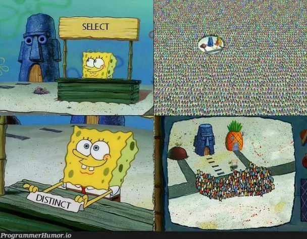
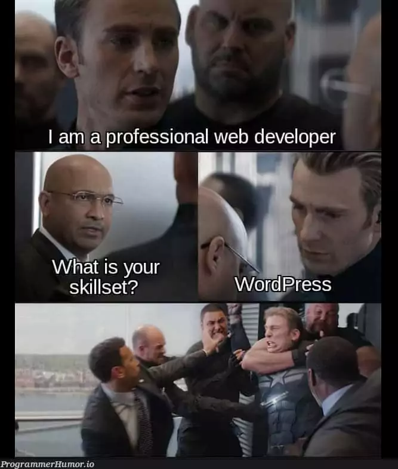

Hey there. My name is Anastasia Tysenko and I am a Developer and Tech Enthusiast. Welcome to my Website.
Since I was a little kid STEM fields were always interesting to me. With the age of 22 I decided to pursue an education in computer science. I am a student in HTW Berlin. On the side I am lecturing students in preperations for their msa exam. In addition to that I am hosting workshops for children such as 3D-printing workshops.
10/2018 - ongoing HTW Berlin, Berlin - Angewandte Informatik
10/2014 - 09/2017 Universität Potsdam, Potsdam - mathematics/physics (without final degree)
06/2008 - 08/2014 Romain - Rolland - Gymnasium, Berlin
Since 2014 I was working several retail jobs. Since february 2021 I am a working student for the technical company of the Johannesstift Diakonie gAG Conciliamus GmbH. On the side I am hosting 3D-printing workshops for the die Gelbe Villa Berlin.
If you are interested in my upcoming Projects please check out my github page. I have many interesting projects coming up. Take care.
 